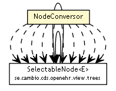

se.cambio.cds.openehr.view.util
Class NodeConversor

java.lang.Object
 se.cambio.cds.openehr.view.util.NodeConversor
se.cambio.cds.openehr.view.util.NodeConversor
public class NodeConversor
- extends Object
- Author:
- icorram
| Methods inherited from class java.lang.Object |
clone, equals, finalize, getClass, hashCode, notify, notifyAll, toString, wait, wait, wait |
SEARCH_ONLY_LEAVES
public static int SEARCH_ONLY_LEAVES
SEARCH_ONLY_PARENT
public static int SEARCH_ONLY_PARENT
SEARCH_ALL
public static int SEARCH_ALL
NodeConversor
public NodeConversor()
setAllVisible
public static void setAllVisible(SelectableNode<?> raizNodo)
filterByText
public static void filterByText(SelectableNode<?> raizNodo,
String filtro)
getSelectedObject
public static Object getSelectedObject(SelectableNode<?> nodoRaiz)
getSelectedObject
public static Object getSelectedObject(SelectableNode<?> nodoRaiz,
boolean allowParent)
getSelectedNode
public static SelectableNode<?> getSelectedNode(SelectableNode<?> nodoRaiz,
boolean allowParent)
getSelectedObjects
public static Collection<Object> getSelectedObjects(SelectableNode<?> nodoRaiz)
getSelectedObjects
public static Collection<Object> getSelectedObjects(SelectableNode<?> nodoRaiz,
int searchType)
addSelectedNodes
public static void addSelectedNodes(SelectableNode<?> nodoRaiz,
Collection<SelectableNode<?>> selectedNodes,
int searchType)
selectObject
public static boolean selectObject(SelectableNode<?> nodoRaiz,
Object obj)
Copyright © 2013 Cambio. All Rights Reserved.